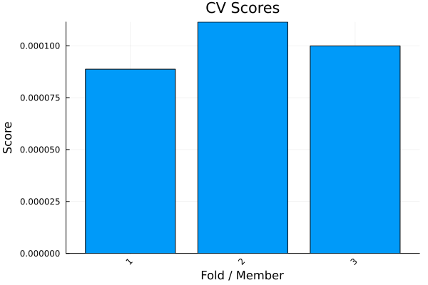

The source files can be found in user_guide/.
Validation and tuning
Before trusting a strategy you want to know how it behaves on data it was not fitted to, and you want its hyperparameters chosen by that out-of-sample performance rather than by hand. PortfolioOptimisers.jl provides cross-validation splitters and cross-validated parameter search that work with any optimiser. This page shows the minimal path; for the full menu of splitters and search strategies see the validation & tuning examples.
using PortfolioOptimisers, CSV, TimeSeries, Clarabel, StatsPlots, GraphRecipesX = TimeArray(CSV.File(joinpath(@__DIR__, "../examples/SP500.csv.gz")); timestamp = :Date)[(end - 252):end]rd = prices_to_returns(X)slv = Solver(; name = :clarabel, solver = Clarabel.Optimizer, settings = Dict("verbose" => false), check_sol = (; allow_local = true, allow_almost = true))mr = MeanRisk(; opt = JuMPOptimiser(; slv = slv))MeanRisk
opt ┼ JuMPOptimiser
│ pe ┼ EmpiricalPrior
│ │ ce ┼ PortfolioOptimisersCovariance
│ │ │ ce ┼ Covariance
│ │ │ │ me ┼ SimpleExpectedReturns
│ │ │ │ │ w ┴ nothing
│ │ │ │ ce ┼ GeneralCovariance
│ │ │ │ │ ce ┼ SimpleCovariance: SimpleCovariance(true)
│ │ │ │ │ w ┴ nothing
│ │ │ │ alg ┼ FullMoment()
│ │ │ │ w ┴ nothing
│ │ │ mp ┼ MatrixProcessing
│ │ │ │ pdm ┼ Posdef
│ │ │ │ │ alg ┼ UnionAll: NearestCorrelationMatrix.Newton
│ │ │ │ │ kwargs ┴ @NamedTuple{}: NamedTuple()
│ │ │ │ dn ┼ nothing
│ │ │ │ dt ┼ nothing
│ │ │ │ alg ┼ nothing
│ │ │ │ order ┴ NTuple{4, Symbol}: (:pdm, :dn, :dt, :alg)
│ │ me ┼ SimpleExpectedReturns
│ │ │ w ┴ nothing
│ │ horizon ┴ nothing
│ slv ┼ Solver
│ │ name ┼ Symbol: :clarabel
│ │ solver ┼ UnionAll: Clarabel.MOIwrapper.Optimizer
│ │ settings ┼ Dict{String, Bool}: Dict{String, Bool}("verbose" => 0)
│ │ check_sol ┼ @NamedTuple{allow_local::Bool, allow_almost::Bool}: (allow_local = true, allow_almost = true)
│ │ add_bridges ┴ Bool: true
│ wb ┼ WeightBounds
│ │ lb ┼ Float64: 0.0
│ │ ub ┴ Float64: 1.0
│ bgt ┼ Float64: 1.0
│ sbgt ┼ nothing
│ gbgt ┼ nothing
│ xbgt ┼ Bool: false
│ lt ┼ nothing
│ st ┼ nothing
│ lcse ┼ nothing
│ cte ┼ nothing
│ gcarde ┼ nothing
│ sgcarde ┼ nothing
│ smtx ┼ nothing
│ sgmtx ┼ nothing
│ slt ┼ nothing
│ sst ┼ nothing
│ sglt ┼ nothing
│ sgst ┼ nothing
│ tn ┼ nothing
│ fees ┼ nothing
│ sets ┼ nothing
│ tr ┼ nothing
│ ple ┼ nothing
│ ret ┼ ArithmeticReturn
│ │ settings ┼ JuMPReturnsSettings
│ │ │ scale ┼ Float64: 1.0
│ │ │ lb ┼ nothing
│ │ │ rte ┼ Bool: true
│ │ │ fee ┼ Bool: true
│ │ │ mic ┴ Bool: true
│ │ ucs ┼ nothing
│ │ mu ┴ nothing
│ sca ┼ SumScalariser()
│ ccnt ┼ nothing
│ cobj ┼ nothing
│ sc ┼ Int64: 1
│ so ┼ Int64: 1
│ ss ┼ nothing
│ card ┼ nothing
│ scard ┼ nothing
│ l2c ┼ nothing
│ lpc ┼ nothing
│ linfc ┼ nothing
│ l1 ┼ nothing
│ l2 ┼ nothing
│ lp ┼ nothing
│ linf ┼ nothing
│ brt ┼ Bool: false
│ x_src ┼ Symbol: :prior
│ z_src ┼ Symbol: :data
│ strict ┴ Bool: false
r ┼ Variance
│ settings ┼ RiskMeasureSettings
│ │ scale ┼ Float64: 1.0
│ │ ub ┼ nothing
│ │ rke ┴ Bool: true
│ sigma ┼ nothing
│ chol ┼ nothing
│ rc ┼ nothing
│ alg ┴ SquaredSOCRiskExpr()
obj ┼ MinimumRisk()
wi ┼ nothing
fb ┴ nothing
1. Cross-validation
A cross-validation splitter partitions the timeline into training and testing folds. KFold is the simplest — n contiguous folds, each held out in turn. cross_val_predict fits the optimiser on each training fold and stitches the out-of-sample predictions back together, so you can score the strategy on data it never saw.
kfold = KFold(; n = 3)pred = cross_val_predict(mr, rd, kfold)MultiPeriodPredictionResult
pred ┼ 3-element Vector{PredictionResult}
│ PredictionResult ⋯
│ PredictionResult ⋯
│ PredictionResult ⋯
mrd ┼ PredictionReturnsResult
│ nx ┼ 20-element SubArray{String, 1, Vector{String}, Tuple{Base.Slice{Base.OneTo{Int64}}}, true}
│ X ┼ 252-element Vector{Float64}
│ nf ┼ nothing
│ F ┼ nothing
│ nb ┼ nothing
│ B ┼ nothing
│ ts ┼ 252-element Vector{Date}
│ iv ┼ nothing
│ ivpa ┴ nothing
id ┴ nothing
The stitched predictions carry an out-of-sample realised risk, here the second moment of the predicted returns via expected_risk.
cv_risk = expected_risk(LowOrderMoment(; alg = SecondMoment()), pred)0.00010006296287395051For a more exhaustive evaluation, CombinatorialCrossValidation scores every train/test fold combination — heavier, but a fuller picture. See Cross Validation.
2. Hyperparameter tuning
GridSearchCrossValidation searches a parameter grid and keeps the combination that scores best on the test folds. The grid is a list of "path" => values pairs, where the path is a string lens into the estimator (parsed by Accessors.jl); a scoring rule like MeanReturnRiskRatio ranks the candidates. search_cross_validation runs the search and returns the tuned estimator in its opt field. Here we tune the L1 regularisation strength of our MeanRisk.
score = MeanReturnRiskRatio(; rk = LowOrderMoment(; alg = SecondMoment()))grid = [["opt.l1" => [0.001, 0.01, 0.05]]]gs_res = search_cross_validation(mr, GridSearchCrossValidation(grid; r = score), rd)SearchCrossValidationResult
opt ┼ MeanRisk
│ opt ┼ JuMPOptimiser
│ │ pe ┼ EmpiricalPrior
│ │ │ ce ┼ PortfolioOptimisersCovariance
│ │ │ │ ce ┼ Covariance
│ │ │ │ │ me ┼ SimpleExpectedReturns
│ │ │ │ │ │ w ┴ nothing
│ │ │ │ │ ce ┼ GeneralCovariance
│ │ │ │ │ │ ce ┼ SimpleCovariance: SimpleCovariance(true)
│ │ │ │ │ │ w ┴ nothing
│ │ │ │ │ alg ┼ FullMoment()
│ │ │ │ │ w ┴ nothing
│ │ │ │ mp ┼ MatrixProcessing
│ │ │ │ │ pdm ┼ Posdef
│ │ │ │ │ │ alg ┼ UnionAll: NearestCorrelationMatrix.Newton
│ │ │ │ │ │ kwargs ┴ @NamedTuple{}: NamedTuple()
│ │ │ │ │ dn ┼ nothing
│ │ │ │ │ dt ┼ nothing
│ │ │ │ │ alg ┼ nothing
│ │ │ │ │ order ┴ NTuple{4, Symbol}: (:pdm, :dn, :dt, :alg)
│ │ │ me ┼ SimpleExpectedReturns
│ │ │ │ w ┴ nothing
│ │ │ horizon ┴ nothing
│ │ slv ┼ Solver
│ │ │ name ┼ Symbol: :clarabel
│ │ │ solver ┼ UnionAll: Clarabel.MOIwrapper.Optimizer
│ │ │ settings ┼ Dict{String, Bool}: Dict{String, Bool}("verbose" => 0)
│ │ │ check_sol ┼ @NamedTuple{allow_local::Bool, allow_almost::Bool}: (allow_local = true, allow_almost = true)
│ │ │ add_bridges ┴ Bool: true
│ │ wb ┼ WeightBounds
│ │ │ lb ┼ Float64: 0.0
│ │ │ ub ┴ Float64: 1.0
│ │ bgt ┼ Float64: 1.0
│ │ sbgt ┼ nothing
│ │ gbgt ┼ nothing
│ │ xbgt ┼ Bool: false
│ │ lt ┼ nothing
│ │ st ┼ nothing
│ │ lcse ┼ nothing
│ │ cte ┼ nothing
│ │ gcarde ┼ nothing
│ │ sgcarde ┼ nothing
│ │ smtx ┼ nothing
│ │ sgmtx ┼ nothing
│ │ slt ┼ nothing
│ │ sst ┼ nothing
│ │ sglt ┼ nothing
│ │ sgst ┼ nothing
│ │ tn ┼ nothing
│ │ fees ┼ nothing
│ │ sets ┼ nothing
│ │ tr ┼ nothing
│ │ ple ┼ nothing
│ │ ret ┼ ArithmeticReturn
│ │ │ settings ┼ JuMPReturnsSettings
│ │ │ │ scale ┼ Float64: 1.0
│ │ │ │ lb ┼ nothing
│ │ │ │ rte ┼ Bool: true
│ │ │ │ fee ┼ Bool: true
│ │ │ │ mic ┴ Bool: true
│ │ │ ucs ┼ nothing
│ │ │ mu ┴ nothing
│ │ sca ┼ SumScalariser()
│ │ ccnt ┼ nothing
│ │ cobj ┼ nothing
│ │ sc ┼ Int64: 1
│ │ so ┼ Int64: 1
│ │ ss ┼ nothing
│ │ card ┼ nothing
│ │ scard ┼ nothing
│ │ l2c ┼ nothing
│ │ lpc ┼ nothing
│ │ linfc ┼ nothing
│ │ l1 ┼ Float64: 0.05
│ │ l2 ┼ nothing
│ │ lp ┼ nothing
│ │ linf ┼ nothing
│ │ brt ┼ Bool: false
│ │ x_src ┼ Symbol: :prior
│ │ z_src ┼ Symbol: :data
│ │ strict ┴ Bool: false
│ r ┼ Variance
│ │ settings ┼ RiskMeasureSettings
│ │ │ scale ┼ Float64: 1.0
│ │ │ ub ┼ nothing
│ │ │ rke ┴ Bool: true
│ │ sigma ┼ nothing
│ │ chol ┼ nothing
│ │ rc ┼ nothing
│ │ alg ┴ SquaredSOCRiskExpr()
│ obj ┼ MinimumRisk()
│ wi ┼ nothing
│ fb ┴ nothing
test_scores ┼ 5×3 Matrix{Float64}
train_scores ┼ nothing
lens_grid ┼ 3-element Vector{Vector{ComposedFunction{Accessors.PropertyLens{:l1}, Accessors.PropertyLens{:opt}}}}
val_grid ┼ Vector{Tuple{Float64}}: [(0.001,), (0.01,), (0.05,)]
idx ┴ Int64: 3
The tuned estimator optimises like any other.
res_tuned = optimise(gs_res.opt, rd)MeanRiskResult
jr ┼ JuMPOptimisationResult
│ pa ┼ ProcessedJuMPOptimiserAttributes
│ │ pr ┼ LowOrderPrior
│ │ │ X ┼ 252×20 Matrix{Float64}
│ │ │ o_X ┼ nothing
│ │ │ mu ┼ 20-element Vector{Float64}
│ │ │ sigma ┼ 20×20 Matrix{Float64}
│ │ │ chol ┼ nothing
│ │ │ w ┼ nothing
│ │ │ ens ┼ nothing
│ │ │ kld ┼ nothing
│ │ │ ow ┼ nothing
│ │ │ rr ┼ nothing
│ │ │ fpr ┼ nothing
│ │ │ Z ┴ nothing
│ │ wb ┼ WeightBounds
│ │ │ lb ┼ 20-element StepRangeLen{Float64, Base.TwicePrecision{Float64}, Base.TwicePrecision{Float64}, Int64}
│ │ │ ub ┴ 20-element StepRangeLen{Float64, Base.TwicePrecision{Float64}, Base.TwicePrecision{Float64}, Int64}
│ │ lt ┼ nothing
│ │ st ┼ nothing
│ │ lcsr ┼ nothing
│ │ ctr ┼ nothing
│ │ gcardr ┼ nothing
│ │ sgcardr ┼ nothing
│ │ smtx ┼ nothing
│ │ sgmtx ┼ nothing
│ │ slt ┼ nothing
│ │ sst ┼ nothing
│ │ sglt ┼ nothing
│ │ sgst ┼ nothing
│ │ tn ┼ nothing
│ │ fees ┼ nothing
│ │ plr ┼ nothing
│ │ ret ┼ ArithmeticReturn
│ │ │ settings ┼ JuMPReturnsSettings
│ │ │ │ scale ┼ Float64: 1.0
│ │ │ │ lb ┼ nothing
│ │ │ │ rte ┼ Bool: true
│ │ │ │ fee ┼ Bool: true
│ │ │ │ mic ┴ Bool: true
│ │ │ ucs ┼ nothing
│ │ │ mu ┴ 20-element Vector{Float64}
│ │ sca ┼ SumScalariser()
│ │ imsk ┴ nothing
│ retcode ┼ OptimisationSuccess
│ │ res ┴ Dict{Any, Any}: Dict{Any, Any}()
│ sol ┼ JuMPOptimisationSolution
│ │ w ┴ 20-element Vector{Float64}
│ model ┼ A JuMP Model
│ │ ├ solver: Clarabel
│ │ ├ objective_sense: MIN_SENSE
│ │ │ └ objective_function_type: QuadExpr
│ │ ├ num_variables: 22
│ │ ├ num_constraints: 5
│ │ │ ├ AffExpr in MOI.EqualTo{Float64}: 1
│ │ │ ├ Vector{AffExpr} in MOI.Nonnegatives: 1
│ │ │ ├ Vector{AffExpr} in MOI.Nonpositives: 1
│ │ │ ├ Vector{AffExpr} in MOI.NormOneCone: 1
│ │ │ └ Vector{AffExpr} in MOI.SecondOrderCone: 1
│ │ └ Names registered in the model
│ │ └ :G, :bgt, :cdev_soc_1, :cl1_noc, :dev_1, :k, :l1, :lw, :obj_expr, :op, :ret, :ret_1, :ret_vec, :risk, :risk_vec, :sc, :so, :t_l1, :variance_flag, :variance_risk_1, :w, :w_lb, :w_ub
r ┼ Variance
│ settings ┼ RiskMeasureSettings
│ │ scale ┼ Float64: 1.0
│ │ ub ┼ nothing
│ │ rke ┴ Bool: true
│ sigma ┼ 20×20 Matrix{Float64}
│ chol ┼ nothing
│ rc ┼ nothing
│ alg ┴ SquaredSOCRiskExpr()
fb ┴ nothing
RandomisedSearchCrossValidation samples the grid (or distributions) instead of enumerating it — cheaper for large spaces; see Hyperparameter Tuning.
3. Time-dependent inputs
Under cross-validation each fold is a separate optimisation over its own slice of time, and any problem-definition input — constraints, priors, risk measures, objectives, even the fallback optimiser — can be told to change with it. Wrap a per-fold vector (or a function of the fold's context) in TimeDependent and store it in the field it varies; the fold loop swaps entry i in for fold i. Execution-control inputs (solvers, RNGs) stay static. Here the per-asset weight cap tightens as a walk-forward advances:
wf = IndexWalkForward(126, 42)n = n_splits(wf, rd)caps = TimeDependent([WeightBounds(; lb = 0.0, ub = ub) for ub in range(0.35, 0.2, n)])mr_caps = MeanRisk(; opt = JuMPOptimiser(; slv = slv, wb = caps))pred_caps = cross_val_predict(mr_caps, rd, wf)MultiPeriodPredictionResult
pred ┼ 3-element Vector{PredictionResult}
│ PredictionResult ⋯
│ PredictionResult ⋯
│ PredictionResult ⋯
mrd ┼ PredictionReturnsResult
│ nx ┼ 20-element SubArray{String, 1, Vector{String}, Tuple{Base.Slice{Base.OneTo{Int64}}}, true}
│ X ┼ 126-element Vector{Float64}
│ nf ┼ nothing
│ F ┼ nothing
│ nb ┼ nothing
│ B ┼ nothing
│ ts ┼ 126-element Vector{Date}
│ iv ┼ nothing
│ ivpa ┴ nothing
id ┴ nothing
A schedule's values may be whole optimisers — so the strategy itself switches per fold — and such a schedule can be handed to cross_val_predict directly as the optimiser. Because there is no static optimiser to fall back to, it must state what a fold-less optimise should run, via default:
iv = InverseVolatility()strategies = TimeDependent([isodd(i) ? mr : iv for i in 1:n]; default = mr)pred_switch = cross_val_predict(strategies, rd, wf)MultiPeriodPredictionResult
pred ┼ 3-element Vector{PredictionResult}
│ PredictionResult ⋯
│ PredictionResult ⋯
│ PredictionResult ⋯
mrd ┼ PredictionReturnsResult
│ nx ┼ 20-element SubArray{String, 1, Vector{String}, Tuple{Base.Slice{Base.OneTo{Int64}}}, true}
│ X ┼ 126-element Vector{Float64}
│ nf ┼ nothing
│ F ┼ nothing
│ nb ┼ nothing
│ B ┼ nothing
│ ts ┼ 126-element Vector{Date}
│ iv ┼ nothing
│ ivpa ┴ nothing
id ┴ nothing
Outside a fold loop a schedule is inert: a plain optimise runs the affected field at its static default (or the schedule's own default). For schedules in meta-optimiser fields, callables that read the fold's data, and mixing precomputed results into a schedule, see Time Dependent Constraints and Time Dependent Optimisers.
4. Cross-validation scores
plot_cv_scores visualises the per-fold out-of-sample scores — a quick read on how stable the strategy is across the timeline.
plot_cv_scores(LowOrderMoment(; alg = SecondMoment()), pred)
This page was generated using Literate.jl.